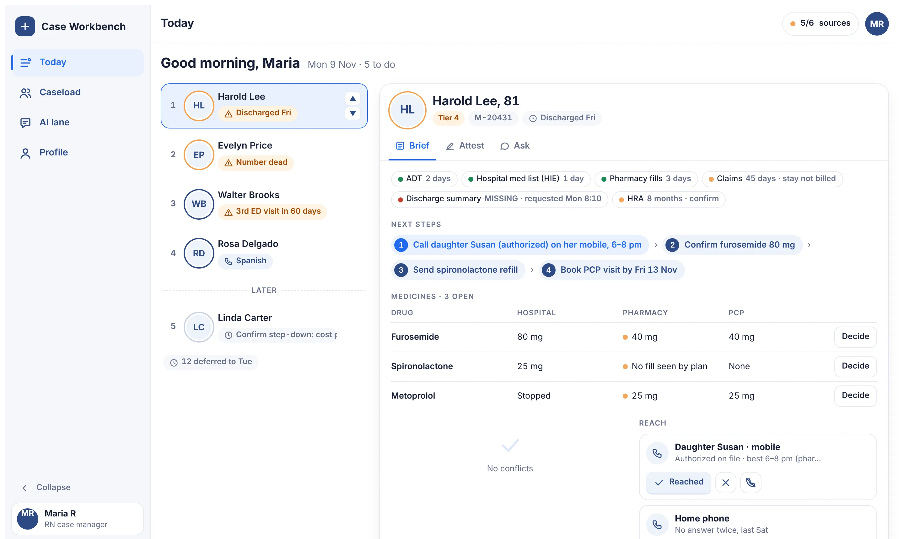
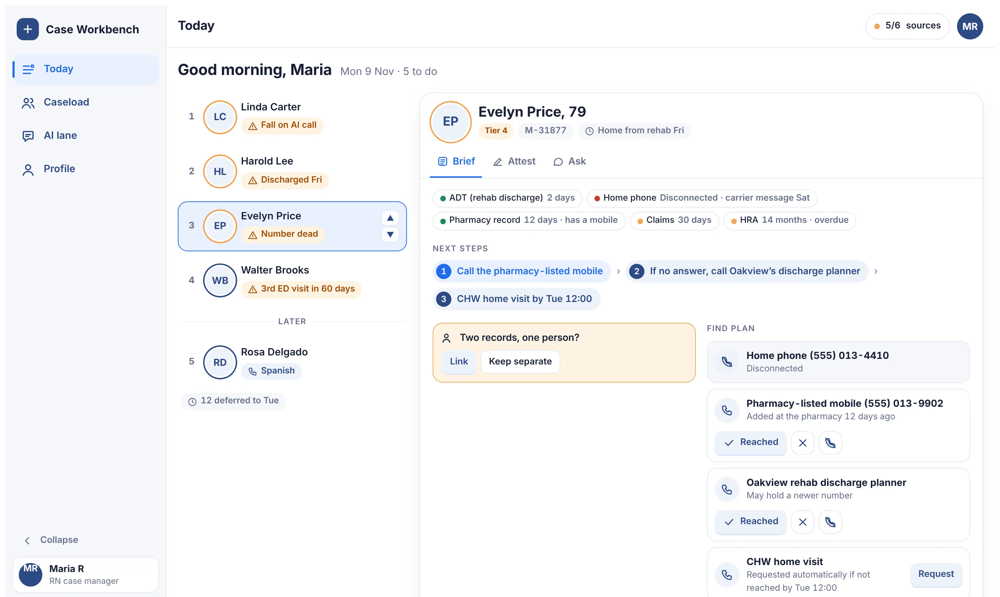
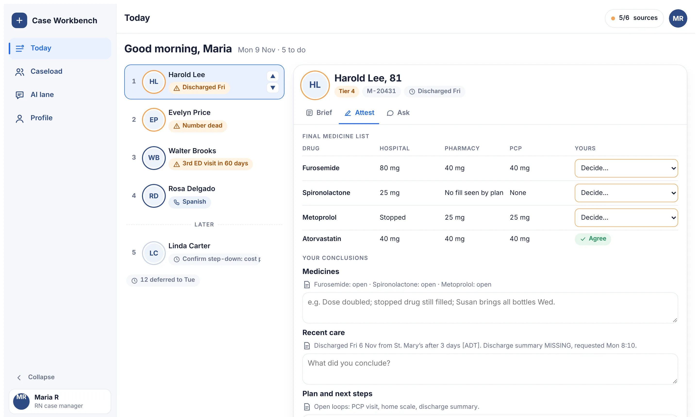
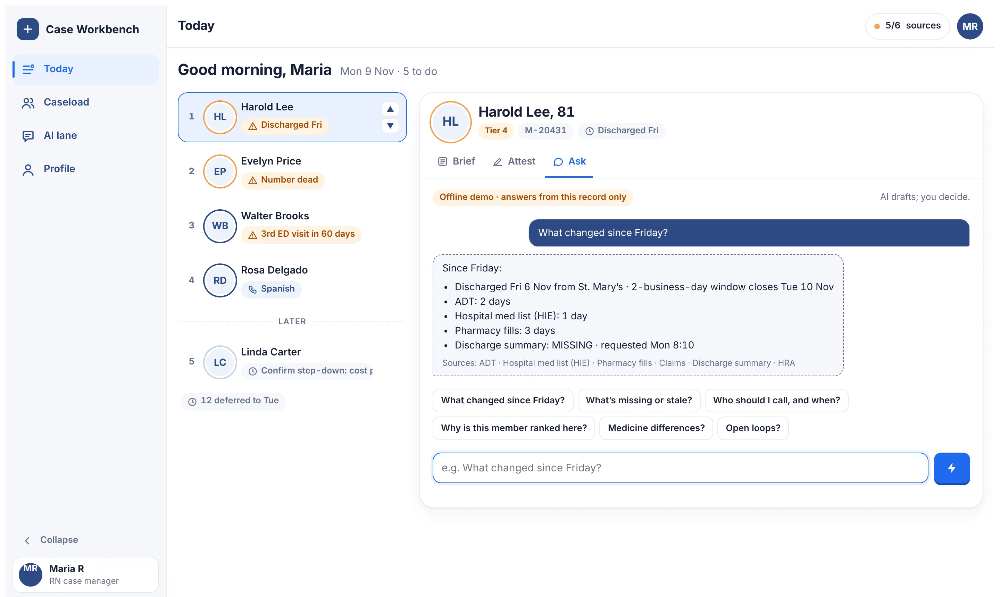
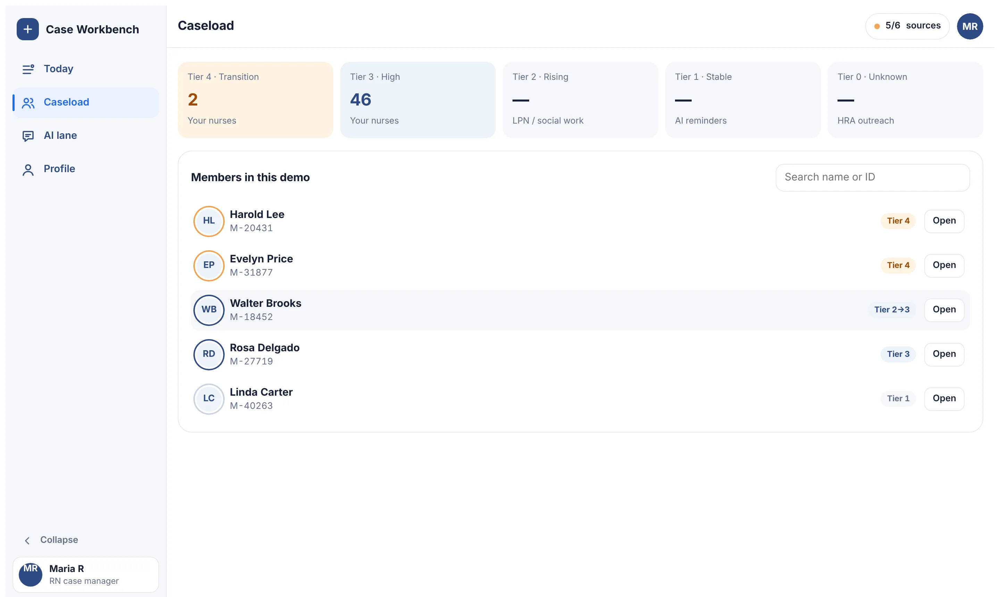
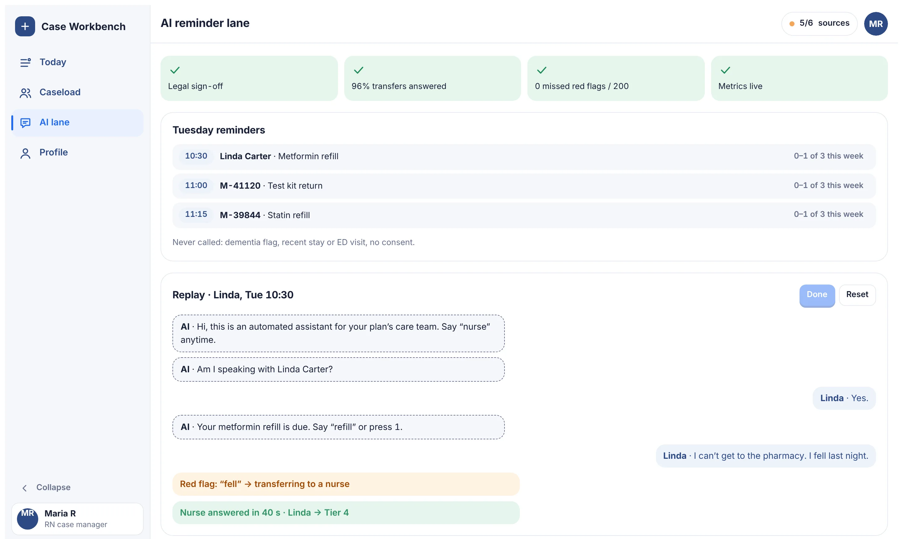

HiLabs APM caselet · Wireframes
Screens from the working prototype, shown with Maria’s Monday and five fictional patients. All names, IDs and phone numbers are made up.
Open the live prototypeJump to screens




